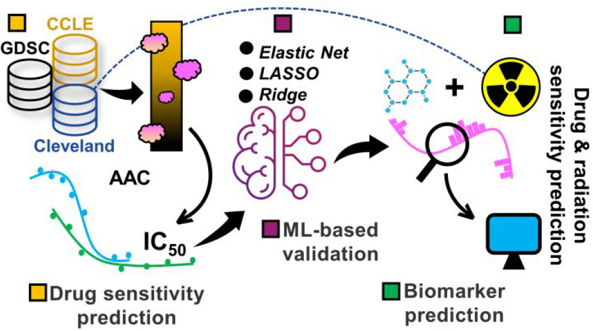
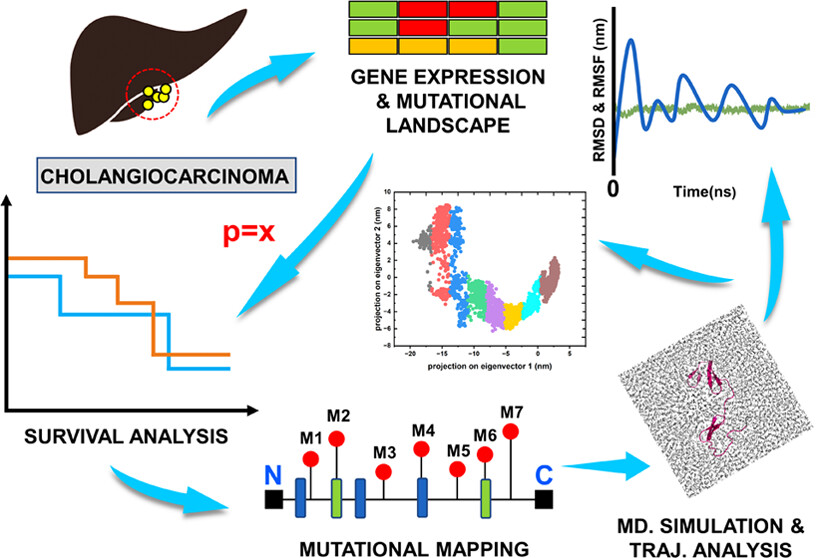
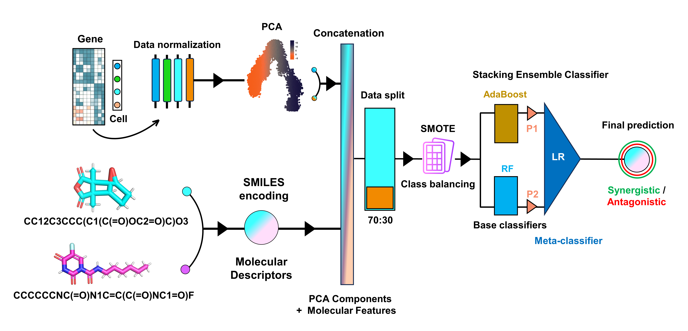

Startup (AIONCDYN)
Mission of the Founder
At AIONCDYN, our mission is to pioneer the forefront of oncological research through the integration of artificial intelligence and computational structural modeling. We are dedicated to advancing the field of anticancer therapies by leveraging cutting-edge technologies and innovative methodologies.
Our goal is to contribute significantly to the development of novel therapeutic strategies that target cancer with unprecedented precision and efficacy. By harnessing the power of AI, we aim to elucidate complex biological pathways, predict drug interactions, and design optimized therapeutic agents that can revolutionize cancer treatment.
AIONCDYN is committed to pushing the boundaries of what is possible in computational biology. We strive to create a paradigm shift in cancer therapy development by utilizing high-throughput data analysis, machine learning algorithms, and advanced structural modeling techniques. Our research endeavors are focused on accelerating the discovery of potent anticancer compounds and enhancing the therapeutic index of existing treatments.
Through our innovative approaches, AIONCDYN aspires to make a profound impact on the lives of cancer patients worldwide. We believe that our interdisciplinary efforts will lead to breakthroughs that redefine the landscape of cancer therapeutics and offer new hope to those affected by this devastating disease.
Dr. Aamir Mehmood, Ph.D.
Founder & CEO, AIONCDYN
Glimpse of Our Contribution to Cancer Treatment
Colorectal cancer is considered one of the leading causes of death that is linked with the Kirsten Rat Sarcoma (KRAS) harboring codons 13 and 61 mutations. The objective for this study is to search for clinically important codon 61 mutations and analyze how they affect the protein structural dynamics. Additionally, a deep-learning approach is used to carry out a similarity search for potential compounds that might have a comparatively better affinity. Public databases like The Cancer Genome Atlas and Genomic Data Commons were accessed for obtaining the data regarding mutations that are associated with colon cancer. Multiple analysis such as genomic alteration landscape, survival analysis, and systems biology-based kinetic simulations were carried out to predict dynamic changes for the selected mutations. Additionally, a molecular dynamics simulation of 100 ns for all the seven shortlisted codon 61 mutations have been conducted, which revealed noticeable deviations. Finally, the deep learning-based predicted compounds were docked with the KRAS 3D conformer, showing better affinity and good docking scores as compared to the already existing drugs. Taking together the outcomes of systems biology and molecular dynamics, it is observed that the reported mutations in the SII region are highly detrimental as they have an immense impact on the protein sensitive sites’ native conformation and overall stability. The drugs reported in this study show increased performance and are encouraged to be used for further evaluation regarding the situation that ascends as a result of KRAS mutations.
Read the full article Breast cancer is one of the major causes of death in women worldwide. It is a diverse illness with substantial intersubject heterogeneity, even among individuals with the same type of tumor, and customized therapy has become increasingly important in this sector. Because of the clinical and physical variability of different kinds of breast cancers, multiple staging and classification systems have been developed. As a result, these tumors exhibit a wide range of gene expression and prognostic indicators. To date, no comprehensive investigation of model training procedures on information from numerous cell line screenings has been conducted together with radiation data. We used human breast cancer cell lines and drug sensitivity information from Cancer Cell Line Encyclopedia (CCLE) and Genomics of Drug Sensitivity in Cancer (GDSC) databases to scan for potential drugs using cell line data. The results are further validated through three machine learning approaches: Elastic Net, LASSO, and Ridge. Next, we selected top-ranked biomarkers based on their role in breast cancer and tested them further for their resistance to radiation using the data from the Cleveland database. We have identified six drugs named Palbociclib, Panobinostat, PD-0325901, PLX4720, Selumetinib, and Tanespimycin that significantly perform on breast cancer cell lines. Also, five biomarkers named TNFSF15, DCAF6, KDM6A, PHETA2, and IFNGR1 are sensitive to all six shortlisted drugs and show sensitivity to the radiations. The proposed biomarkers and drug sensitivity analysis are helpful in translational cancer studies and provide valuable insights for clinical trial design.
Read the full article Cholangiocarcinoma (CCA) involves various epithelial tumors historically linked with poor prognosis. Currently, there are no effective treatments for patients who are diagnosed with this fatal disease. To address this, our study investigates the molecular mechanisms and associated gene alterations related to CCA. We performed the molecular profiling of 55 primary and metastatic CCA tissues using multi-omics approaches including whole-exome sequencing, RNA-seq, and targeted protein assays. This study aims to identify potential therapeutic targets and biomarkers for the treatment of CCA. Bioinformatics analysis was conducted to profile somatic mutations, gene expression patterns, and protein alterations. Moreover, we developed an in silico model to predict potential drug candidates targeting the identified alterations. We have discovered several genetic alterations associated with CCA, such as mutations in TP53, KRAS, and IDH1 genes. Furthermore, our study identified several potential drug candidates that may provide effective treatment options for CCA patients. The results of this study offer valuable insights into the molecular landscape of CCA and pave the way for developing targeted therapies that could improve patient outcomes.
Read the full article Breast cancer (BC) ranks as a leading cause of mortality among women worldwide, with incidence rates continuing to rise. The quest for effective treatments has led to the adoption of drug combination therapy, aiming to enhance drug efficacy. However, identifying synergistic drug combinations remains a daunting challenge due to the myriad of potential drug pairs. Current research leverages machine learning (ML) and deep learning (DL) models for drug-pair synergy prediction and classification. Nevertheless, these models often underperform on specific cancer types, including BC, as they are trained on data spanning various cancers without any specialization. Here, we introduce a stacking ensemble classifier, the drug-drug synergy for breast cancer (DDSBC), tailored explicitly for BC drug-pair cell synergy classification. Unlike existing models that generalize across cancer types, DDSBC is exclusively developed for BC, offering a more focused approach. Our comparative analysis against classical ML methods as well as DL models developed for drug synergy prediction highlights DDSBC's superior performance across test and independent datasets on BC data. Despite certain metrics where other methods narrowly surpass DDSBC by 1-2%, DDSBC consistently emerges as the top-ranked model, showcasing significant differences in scoring metrics and robust performance in ablation studies. DDSBC's performance and practicality position it as a preferred choice or an adjunctive validation tool for identifying synergistic or antagonistic drug pairs in BC, providing valuable insights for treatment strategies.
Read the full articleFor potential collaborators, please reach out to iaamirofficial@gmail.com with your CV and cover letter. We are always looking for innovative minds to join us in our mission to advance cancer treatment.